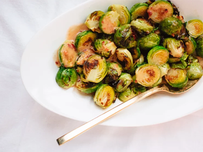

Ingredients
- ½ cup light coconut milk
- 1 ½ teaspoons fresh grated ginger or ¾ teaspoon powdered ginger
- 1 teaspoon agave nectar or sugar
- 1 teaspoon reduced sodium tamari or soy sauce
- ½ to 2 teaspoons chili garlic sauce (to taste)
- 1 teaspoon rice vinegar (or lime juice)
- ¾ pound Brussels sprouts, nubby ends cut off, discolored leaves removed and sliced in half (smaller sprouts are better than large sprouts)
- 1 tablespoon coconut oil
- Sprinkle of sea salt

Directions
- Preheat your broiler. In a small saucepan over medium heat, combine the coconut milk, ginger, agave nectar and tamari. Add chili garlic sauce, to taste. Whisk the ingredients together and simmer for a couple of minutes to infuse the flavors, stirring often. Remove the pan from heat and stir in the rice vinegar.
- Set a 12-inch cast iron skillet over medium-high heat on the stove. Let it heat up for two to three minutes. It should be so hot that a few drops of water sizzle and quickly disappear after contact.
- Toss the prepared Brussels sprouts with olive oil and salt. Toss well, so that the sprouts are evenly coated in a thin layer of oil. Once the pan is hot, dump the sprouts into the pan and quickly rearrange them so the flat sides are face down. Let them cook for about two minutes, or until they are starting to brown on the bottom.
- Transfer the pan to your broiler. The pan will be heavy and hot so use oven mitts and be careful! Let the Brussels broil for about three minutes. Check the sprouts for doneness—their tops should be a little browned and the bottoms caramelized. How long you should leave them in there depends on your preferences and your oven.
- Transfer the sprouts to a bowl(s), drizzle with coconut ginger sauce and serve.